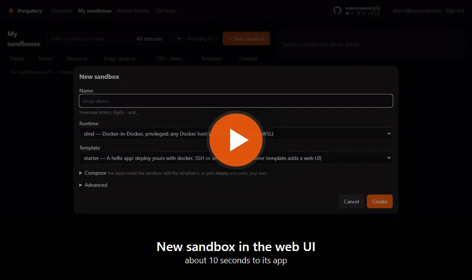

Purgatorium Agentium · p9m
Everyone gets their own Docker, every app gets a URL, idle sandboxes sleep. A self-hosted Vercel for the apps your team and its agents spin up.
About 10 seconds from New sandbox to your own Docker and a public URL.

Focus on what matters, not on the servers under it.
Every sandbox has its own Docker daemon, with a Portainer UI if you want one.
Each app gets a public address, plus TLS addresses for Postgres, Redis and SSH.
Idle sandboxes sleep and wake on the next request. A delete archives: nothing is lost.
One docker compose up on your own server. Open source, AGPL-3.0.
Let an agent build, deploy and check its own app, in a sandbox it cannot leave.
/p9m:init connects a project in one step.# in Claude Code
/plugin marketplace add p9m-team/p9m
/p9m:init
With Docker Desktop, or Docker Engine and the compose plugin, and ports 80 and 443 free.
mkdir p9m && cd p9m
curl -fsSLO https://github.com/csakaszamok/p9m/releases/latest/download/docker-compose.yml
curl -fsSL https://github.com/csakaszamok/p9m/releases/latest/download/setup.sh | bash # prints the admin password
docker compose up -d
Then open http://p9m.lvh.me, sign in as administrator and press New sandbox. Installing on a server: the install guide.